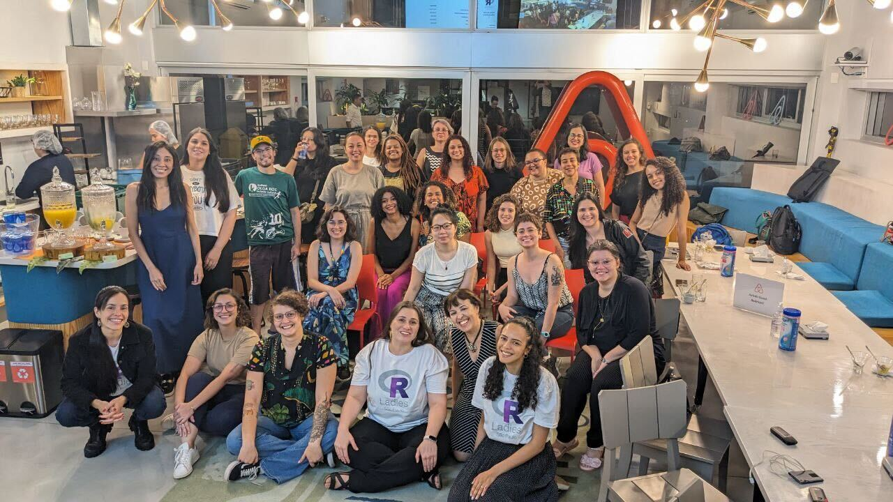
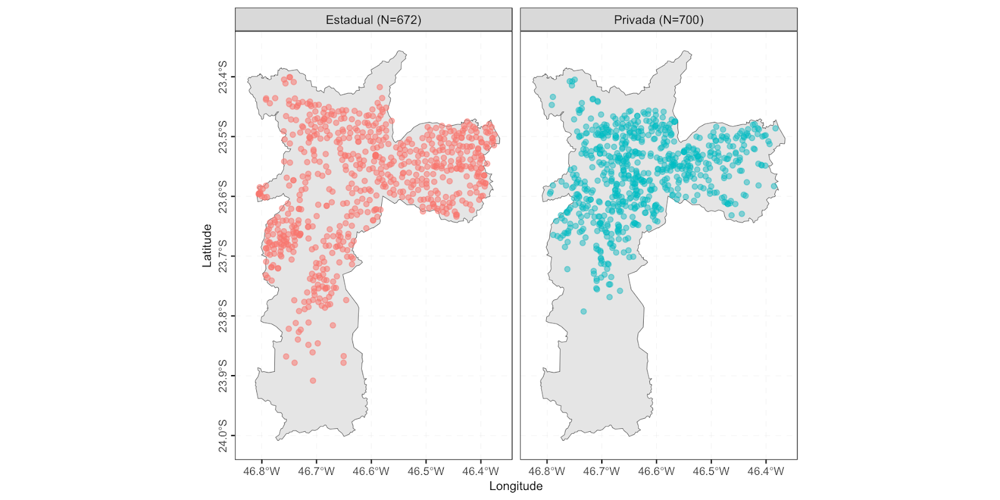

Introduction
On November 22, 2023, R-Ladies São Paulo had the joy of gathering at the Airbnb office in São Paulo for an extraordinary event: R Packages for Brazilian Data. In this event, we had various presentations on the topic, which will be covered in this text.
Along with the presentations, we had networking moments, where we met new people from the community, discussed ideas, shared experiences, and strengthened our bonds. And, of course, all this, along with fantastic coffee offered by Airbnb.
This event is the result of Haydee Svab’s participation in the rOpenSci Champions Program, presenting a bit about the program and also the package she developed this year.
In this post, we will talk about the talks and bring some perspectives from participants.

Participant Testimonials
Bea and Haydée brought important issues to this event and for all those present, mainly regarding the different databases we have to work with and the possible solutions for conducting queries and harmonizing the databases. Always in a welcoming environment provided by RLadies and Airbnb, who hosted this meeting, we women (in the vast majority) gained space to exchange knowledge and make connections. It was a very nice, light, and welcoming meeting in a 5-star environment! (Katia Mine)
I have been frequently participating in R-ladies São Paulo events. I feel welcomed in a harmonious environment, with opportunities for learning and motivation for new professional challenges. (Michele Caramigo)
Presentations
Welcome to Airbnb, by Angela Valle
Angela was our main host at Airbnb! She opened the event by talking about Airbnb and its mission: to help build connections between people and make the world more open and inclusive.
“It was a very rewarding and fruitful experience; I would love to repeat it more times and continue this collaboration. Supporting these meetings and the work that the R-Ladies group does around the world aligns with the mission and values of Airbnb as it contributes to promoting diversity and inclusion, especially in the technological community. At Airbnb, we strive to incorporate these principles in all aspects of the company’s operations.” - Angela Valle, Airbnb
Getting to Know R-Ladies São Paulo, by Luana Antunes
Luana introduced the R-Ladies São Paulo community for the first time, addressing why we exist, who our target audience is, and, most importantly, extending an invitation to anyone who wants to be part of the community and our future activities.
Slides available at: https://r-ladies-sao-paulo.github.io/2023-11-pacotes-br/slide-rladies.html
rOpenSci and the Champions Program, by Haydee Svab
Haydee brought an exciting view of the rOpenSci organization, explaining how this initiative promotes open, reproducible, and quality science through the use of shared data and open-source/free software, especially with the use of packages and tools in R. She presented the Champions Program, which she participated in throughout 2023, highlighting the participation of people from Latin America, whether as mentors or champions.

Haydée explained the program’s objectives and eligibility criteria and highlighted the importance of creating social infrastructure, i.e., strengthening the community. After all, in times of difficulty, having mentorship is crucial for the success of a project (research, package development, etc.).
Slides available at:
https://hsvab.github.io/2023-11-22-MeetUp-Rladies-SP_ropensci
R Packages for Brazilian Data, by Beatriz Milz
This presentation started with some essential concepts: what is a package? How can we install packages? What are package repositories? How can we install packages available in repositories other than CRAN, like GitHub and R-universe? After knowing how to install packages, several packages in R for Brazilian data were mentioned. It was an excellent opportunity to highlight how our community is contributing significantly to making local data more accessible, as well as highlighting the Brazilian community’s involvement in the development of R packages.
Slides available at: https://r-ladies-sao-paulo.github.io/2023-11-pacotes-br/slide-pacotes-br.html
Introduction to the odbr package, by Haydée Svab
Haydée is a consultant, researcher, and teacher in Urban Mobility, Smart Cities, Digital Government, and Data Science. In her master’s, she used data from the origin-destination survey conducted in the São Paulo Metropolitan Region (RMSP), conducting an analysis of the evolution of travel patterns in the RMSP from a gender perspective.
Haydée developed the odbr package to facilitate the use of these data by others during the rOpenSci Champions Program.

Haydee gave an introduction to the odbr package (Svab et al. 2023), a powerful tool that provides data from origin-destination surveys in Brazil. She presented the three main functions of the package: read_od() for obtaining tabular data, read_map() for getting maps, and the read_dictionary() for obtaining data dictionaries, which will be available in three languages: Portuguese, English, and Spanish. Her presentation also showed how it was the process of developing a package for the first time and her difficulties in development and availability on CRAN.
The odbr package is available on CRAN and can be installed using the following command: install.packages("odbr")
Slides available at: https://hsvab.github.io/2023-11-22-MeetUp-Rladies-SP_odbr/
Introduction to the geobr package, by Beatriz Milz
The final presentation was a quick introduction to the geobr (Pereira et al. 2023), a package that facilitates access to public geospatial data from Brazil. We focused on understanding how to find out what data are available in geobr and how we can start visualizing these data using the ggplot2 package. We made an incremental example of a map using only data obtained from geobr, aiming to explore how specialized the high schools in the municipality of São Paulo are. All the codes are available on the slide.

Slides available at: https://r-ladies-sao-paulo.github.io/2023-11-pacotes-br/slide-geobr.html
Support
We are immensely grateful for the support of Airbnb, the RConsortium, and rOpenSci, which made this event possible:
Airbnb: supported the event by providing the space and offering a wonderful coffee break throughout the event. We are immensely grateful to Angela Valle for bridging the gap between R-Ladies São Paulo and Airbnb and securing space and coffee break support.
RConsortium: financial support that enabled the coverage of transportation aids for those who requested it, as well as for the t-shirts used by the team and also raffled off!
rOpenSci: as mentioned earlier, this event is the result of Haydée Svab’s participation in the Champions Program. We thank the organization and, particularly, Yanina Bellini and the program participants!
Invitation
Be sure to follow R-Ladies São Paulo on our social networks and join our group on Telegram. Until the next meeting!